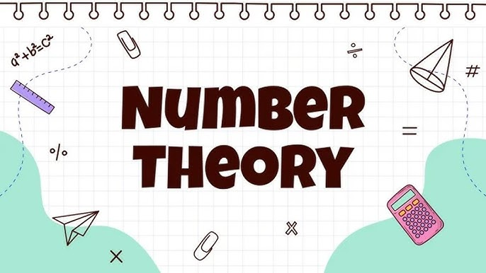
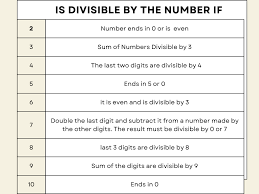
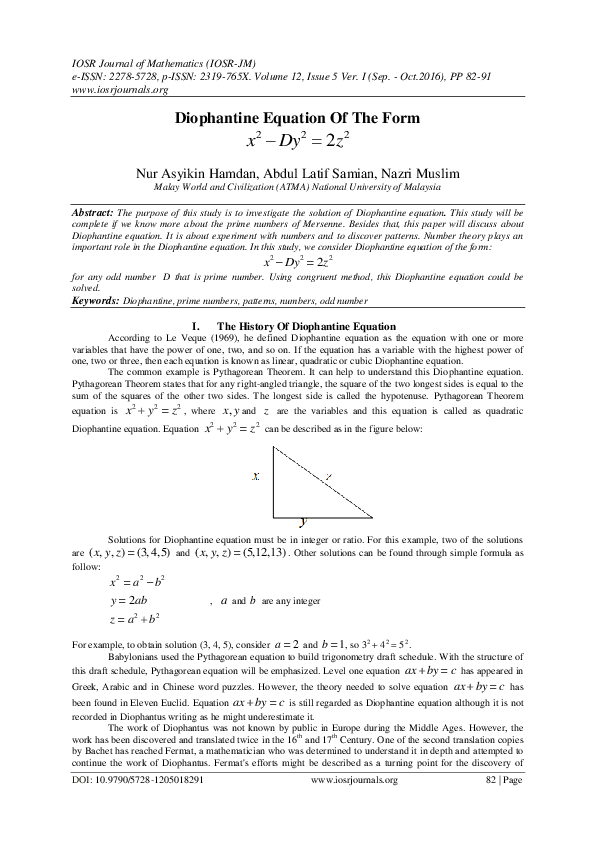
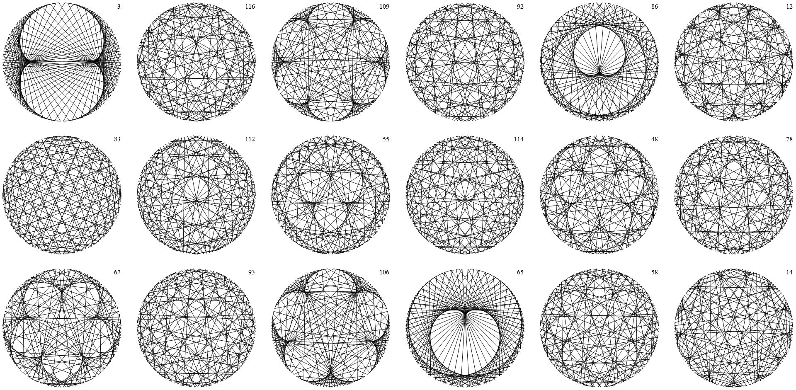

What is Number Theory?
Number theory is a branch of pure mathematics that deals with the properties and relationships of numbers, particularly integers. It is one of the oldest areas of mathematical research, with roots going back to ancient civilizations such as the Greeks and Egyptians. Today, number theory has applications in cryptography, computer science, and various other fields.
At its core, number theory seeks to answer fundamental questions about numbers, such as: Are there infinitely many prime numbers? What is the relationship between different types of numbers? How can we solve Diophantine equations?
Key Concepts in Number Theory
Prime Numbers
A prime number is a natural number greater than 1 that cannot be formed by multiplying two smaller natural numbers. In other words, a prime number has only two divisors: 1 and itself. The sequence of prime numbers begins as 2, 3, 5, 7, 11, 13, 17, 19, and so on.
Applications: Prime numbers are essential in number theory, cryptography, and the construction of random number generators. They are used in RSA encryption, which secures online communications.
Famous Conjecture: The Goldbach Conjecture proposes that every even number greater than 2 can be expressed as the sum of two prime numbers.
Divisibility Rules
Divisibility rules are a set of rules that determine whether one integer is divisible by another. These rules help in simplifying complex calculations and are foundational in number theory.
Example: A number is divisible by 3 if the sum of its digits is divisible by 3. Similarly, a number is divisible by 5 if its last digit is either 0 or 5.
Divisibility rules are important in simplifying polynomials and in solving problems related to modular arithmetic.
Diophantine Equations
Diophantine equations are polynomial equations for which only integer solutions are sought. Named after the ancient Greek mathematician Diophantus, these equations form a central part of number theory.
Example: The equation x^2 + y^2 = z^2 is a Diophantine equation. The most famous solutions to this equation are the Pythagorean triples (e.g., 3, 4, 5 and 5, 12, 13).
Finding integer solutions to Diophantine equations is a challenging task and a key area of study in number theory.
Modular Arithmetic
Modular arithmetic involves working with integers and their remainders when divided by a fixed integer, known as the modulus. In modular arithmetic, numbers "wrap around" after reaching the modulus.
Example: In mod 12 arithmetic, 13 is equivalent to 1, because 13 divided by 12 leaves a remainder of 1.
Modular arithmetic is crucial in cryptography, computer science, and coding theory. It is used in algorithms for encryption, error detection, and efficient computation.
Applications of Number Theory
Number theory has applications in several modern fields, particularly in cryptography, computer science, and coding theory. Below are some of the key areas where number theory plays a critical role:
- Cryptography: Cryptographic systems like RSA rely heavily on the properties of prime numbers and modular arithmetic. These systems secure communication in modern society, from online banking to private messaging.
- Coding Theory: Number theory is used to create error-correcting codes, which ensure data integrity during transmission. These codes are fundamental in data storage, satellite communication, and digital media.
- Computer Algorithms: Many algorithms, especially those used in encryption and optimization, are built on number-theoretic principles. For example, the Fast Fourier Transform (FFT) algorithm has applications in signal processing and image compression.
- Mathematical Physics: In areas such as string theory and quantum mechanics, number-theoretic concepts such as modular forms and partitions play a key role in understanding symmetry and mathematical structure.
Famous Conjectures and Theorems in Number Theory
Number theory is home to some of the most famous problems in mathematics. Here are a few conjectures and theorems that have intrigued mathematicians for centuries:
- Fermat's Last Theorem: This conjecture, proposed by Pierre de Fermat in 1637, states that no three positive integers a, b, and c can satisfy the equation a^n + b^n = c^n for any integer value of n greater than 2. It was famously proven by Andrew Wiles in 1994.
- The Riemann Hypothesis: One of the most important unsolved problems in mathematics, it suggests that all nontrivial zeros of the Riemann zeta function lie on the critical line Re(s) = 1/2.
- Goldbach's Conjecture: This conjecture proposes that every even integer greater than 2 can be expressed as the sum of two prime numbers. While it remains unproven, it has been tested for very large numbers and is widely believed to be true.
- The Twin Prime Conjecture: This conjecture posits that there are infinitely many prime numbers that differ by two, such as (3, 5), (11, 13), and (17, 19). While progress has been made, the conjecture remains unsolved.
The Future of Number Theory
Number theory continues to be an exciting and evolving field of research. With the advent of new computational tools and techniques, number theorists are tackling problems that were once considered unsolvable. Some future directions for number theory include:
- Quantum Computing: The development of quantum computers could revolutionize the way we approach number-theoretic problems. Quantum algorithms could potentially solve problems like factoring large numbers exponentially faster than classical computers.
- New Approaches to Old Conjectures: Researchers are constantly developing new methods to approach old conjectures. For example, progress on the Riemann Hypothesis and the Twin Prime Conjecture continues to be made using tools from analytic number theory.
- Applications in Artificial Intelligence: Number theory may also find applications in AI, particularly in fields like machine learning and neural networks, where optimization and number-theoretic algorithms can be used to improve computational efficiency.